Support yourself with bookmarks
Organize your digital workspace
Throughout this course, you’ll be frequently accessing various websites and platforms. Setting up a well-organized bookmark system will save you time and help you stay focused on learning data science rather than searching for links.
Based on our course registration data, approximately 66% of participants use Google Chrome. These instructions are written specifically for Chrome users. If you’re using a different browser, the general concepts still apply but menu locations and keyboard shortcuts may differ.
Before starting this assignment (and before each module’s lectures), consider these browser hygiene practices:
Close unnecessary tabs: Start fresh by closing all open tabs except the one you’re currently using. This helps you focus and reduces memory usage.
Optional - Clear browsing data: For optimal browser performance, you can clear your cache and browsing history (Three dots menu → Settings → Privacy and security → Clear browsing data).
Note: Clearing browsing data will log you out of most websites, so only do this if you’re comfortable signing back into your accounts. Many people find this intimidating, but it can significantly improve browser performance, especially on older computers.
Step 1: Create a dedicated bookmarks folder in Chrome
- Open Chrome.
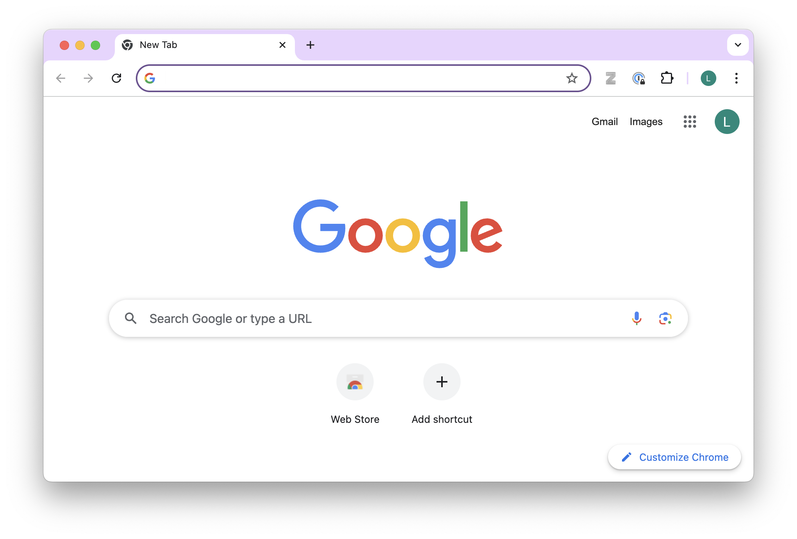
- Click on the three dots menu in the top-right corner.
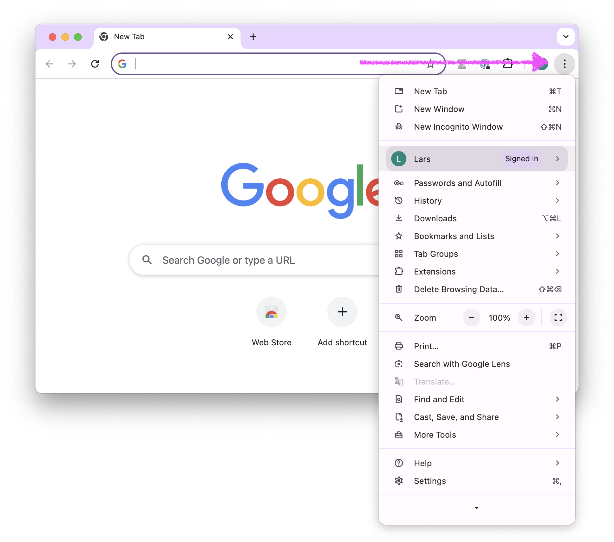
- Click on Bookmarks and Lists -> Click on Show Bookmarks Bar.
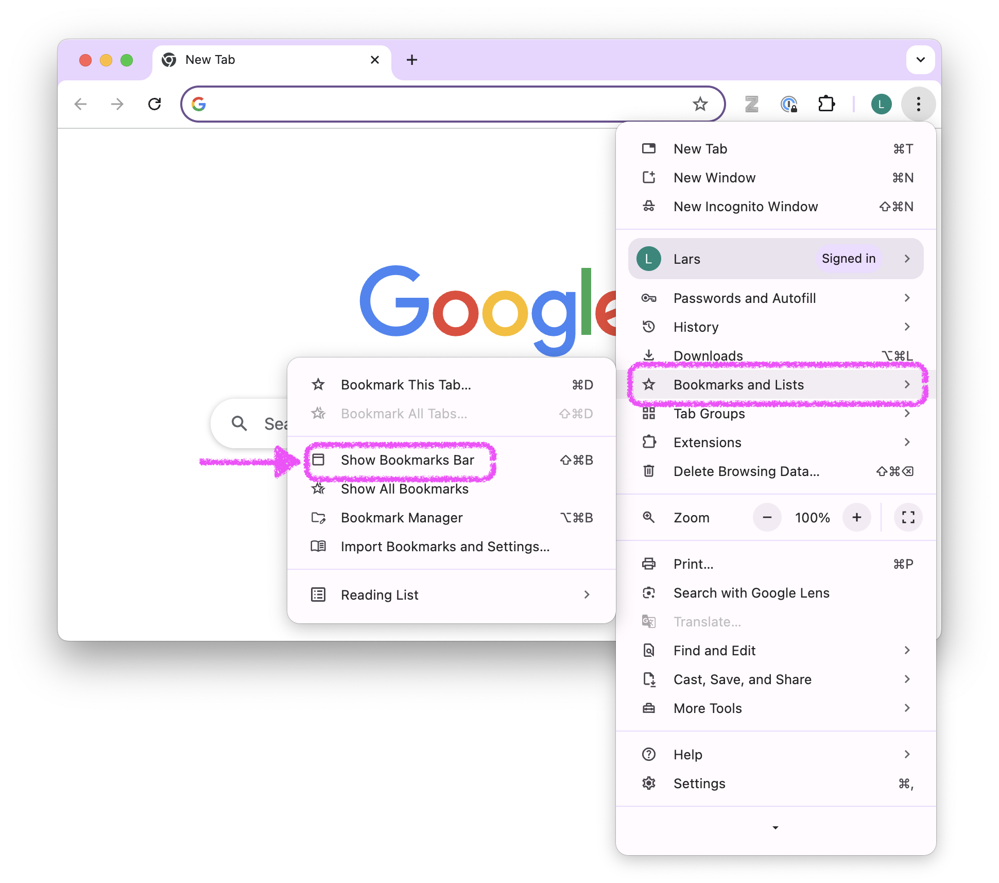
- A bookmarks bar appears below the address bar in your browser. It might have already been there.
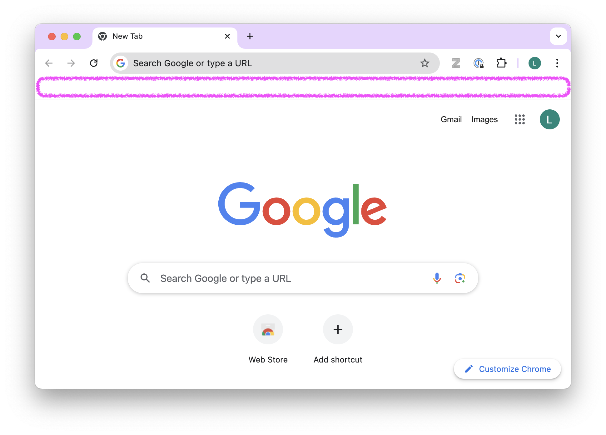
- Right-click on the bookmarks bar and select Add Folder….
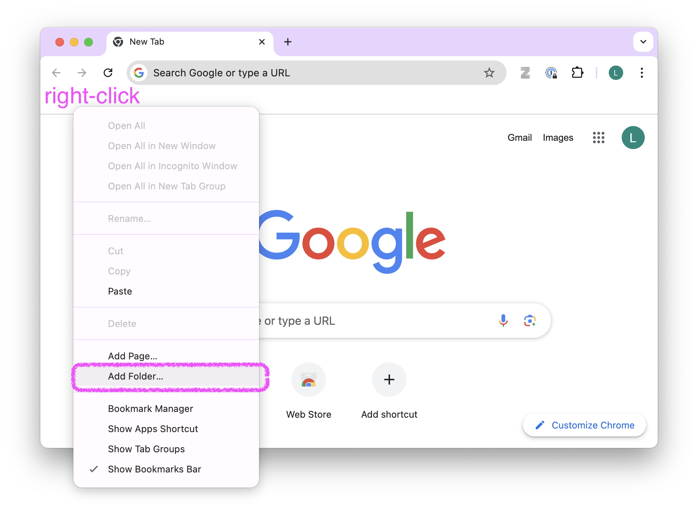
- Name the folder ds4owd-002 in the Name field. Ensure that in the window below, Bookmarks Bar is selected as the location. Click Save.
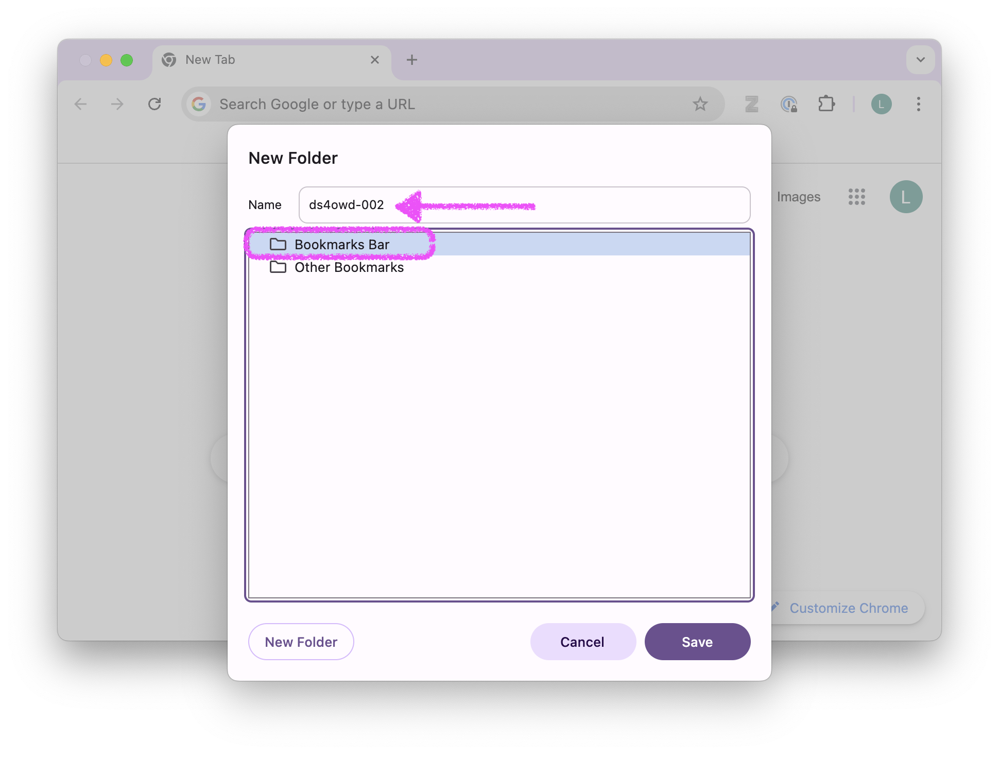
- The folder ds4owd-002 should now appear in your bookmarks bar.
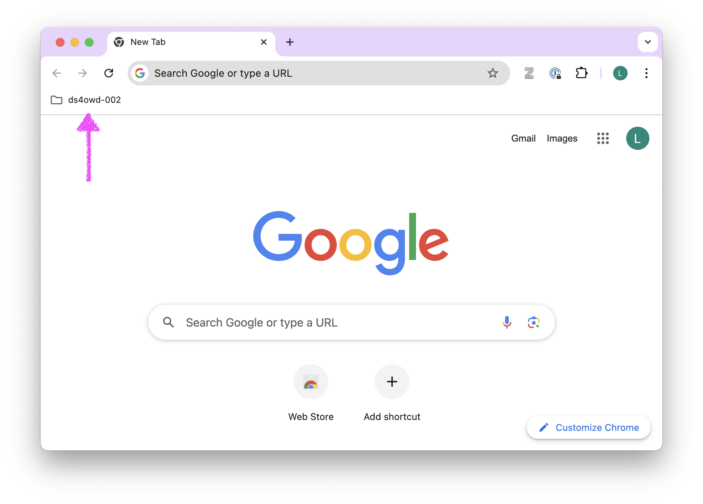
Step 2: Add course website to your folder
- Navigate to the course website: https://ds4owd-002.github.io/website/.
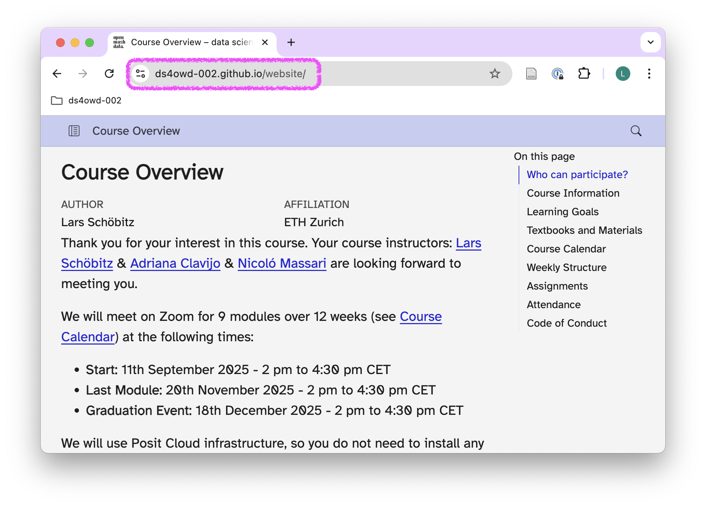
- Click the star icon in the address bar.
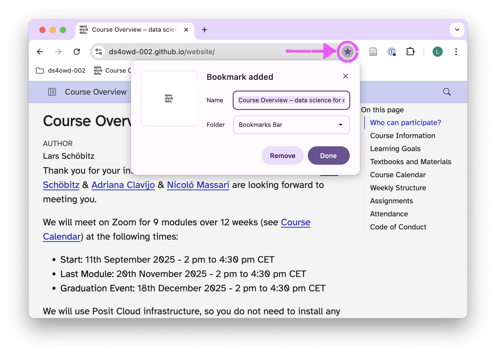
- In the popup, add course website for the Name field.
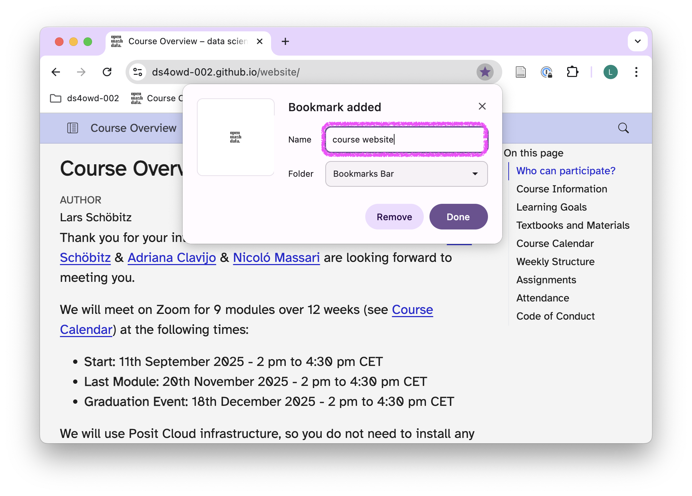
- Click the Folder dropdown and select your ds4owd-002 folder.
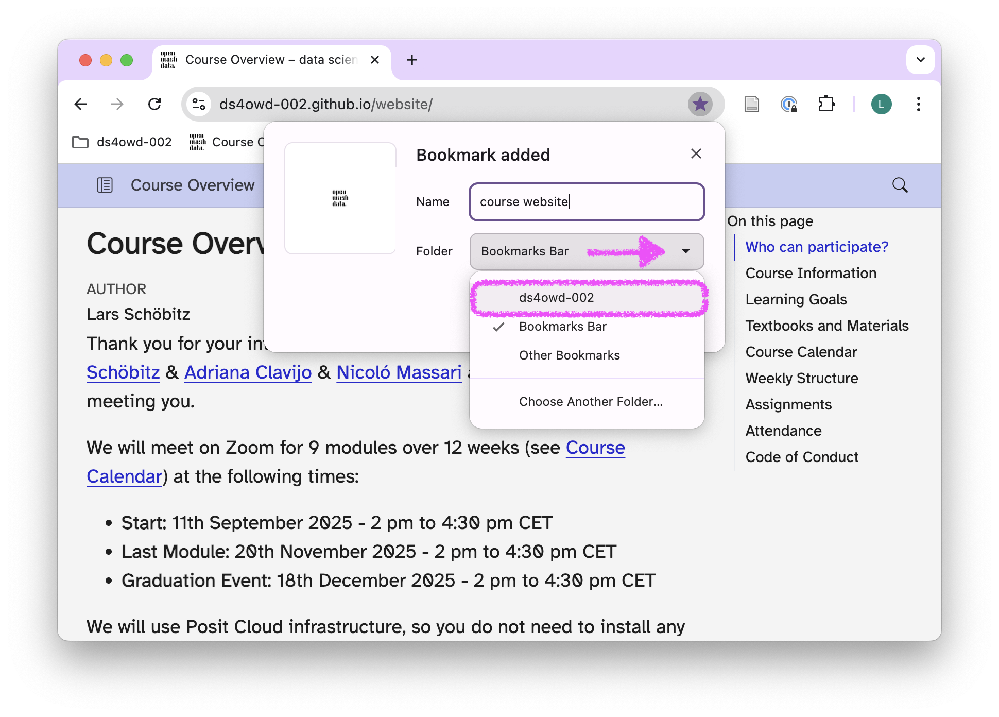
- Click Done.
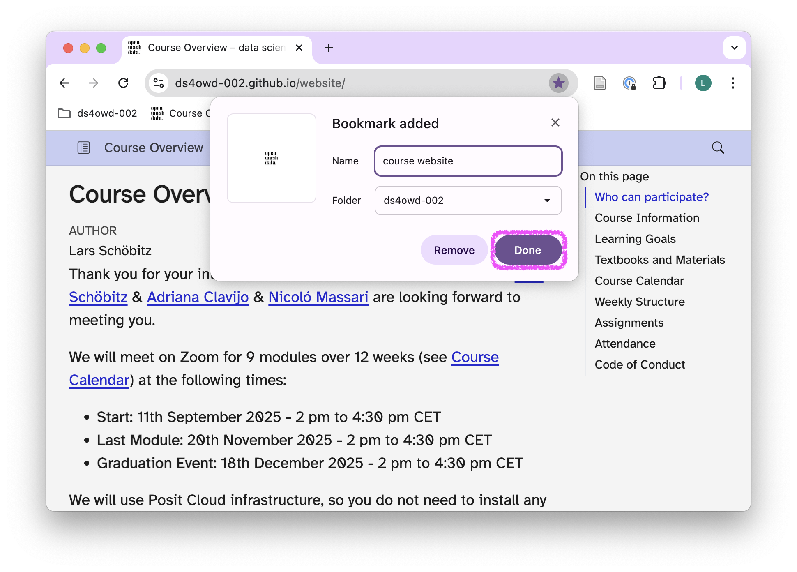
- Click on your ds4owd-002 folder in the bookmarks bar to verify the bookmark was added.
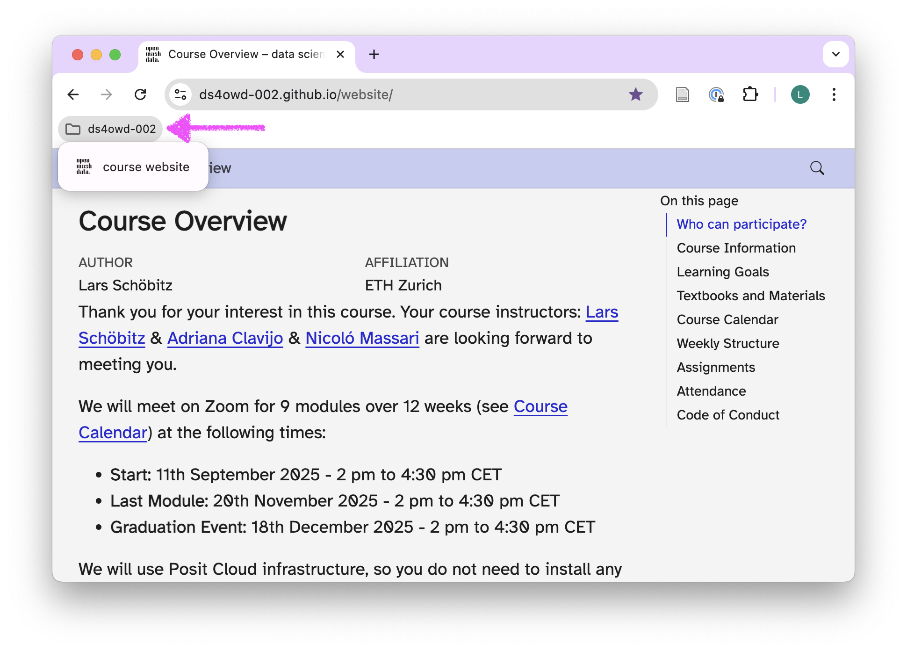
Step 3: Add other essential course links
Add the following bookmarks to your ds4owd-002 folder. For each bookmark, follow the instructions as in Step 2.
Essential course links
- Posit Cloud workspace: https://posit.cloud/spaces/663318
- Name it: Posit Cloud - ds4owd
- GitHub organization: https://github.com/ds4owd-002
- Name it: GitHub - course org
- Element chat: https://app.element.io/#/room/#openwashdata-lobby:staffchat.ethz.ch
- Name it: Element chat
Step 4: Take a screenshot
- Click on your ds4owd-002 folder in the bookmarks bar to verify all bookmarks were added correctly.
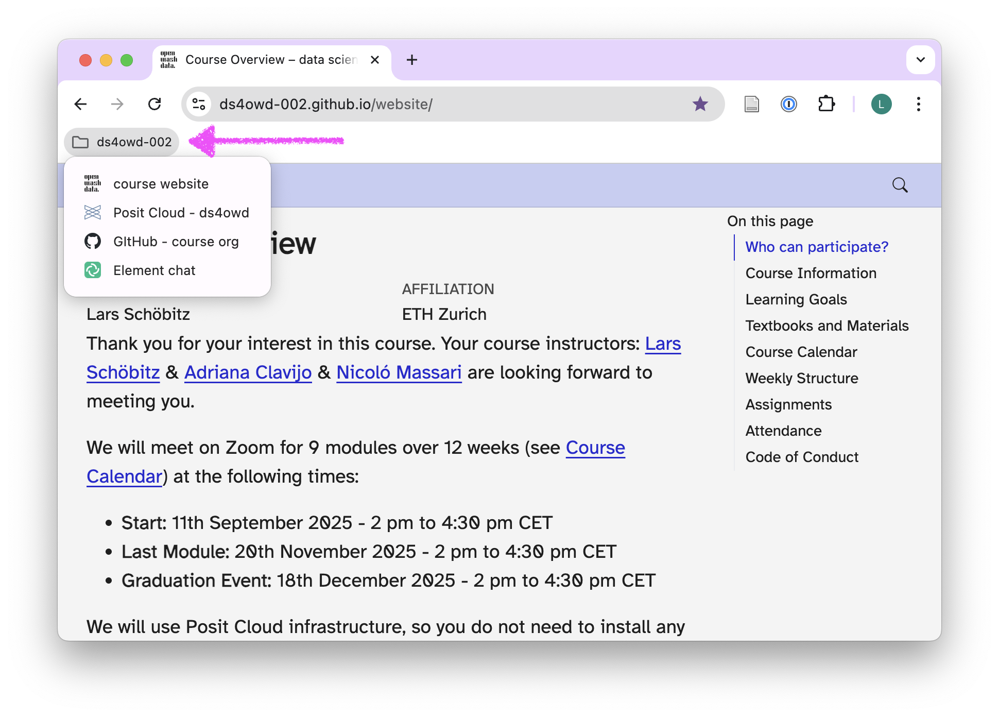
Take a screenshot of your browser showing the expanded folder with all bookmarks.
Save this screenshot as you will need it to complete this assignment.
Step 5: Open issue on GitHub
Open https://github.com/ in your browser.
Navigate to the GitHub organization for the course: https://github.com/ds4owd-002
Find the repository
md-02-assignments-USERNAMEthat ends with your GitHub username, and open it by clicking on the repository name.- Replace
USERNAMEwith your actual GitHub username. - For example, if your username is
johnsmith, the repository will bemd-02-assignments-johnsmith.
- Replace
You can search for your repository by typing your username in the search bar just below the Repository heading.
Click on the Issues tab.
Click on the green New issue button.
In the Title field write: Bookmarks setup completed.
In the Leave a comment field:
- Drag and drop your screenshot from Step 4 into the comment field, or click Attach files by dragging & dropping.
- Add a brief message like: “I have set up my bookmarks folder for ds4owd-002 with all essential course links.”
- Tag the course instructors
@seawaR@massarin@larnsce.
Scroll down the page a bit and click the green Create button.
Congratulations! You have successfully organized your bookmarks and documented your setup.
Step 6: Create sub-folders for better organization in Chrome optional
As the course progresses, organize your Chrome bookmarks with sub-folders:
Right-click on your ds4owd-002 folder.
Select Add new folder.
Create these sub-folders:
- Assignments - for your personal assignment repositories
- Resources - for R documentation, package sites
- Data - for openwashdata and other data sources
Recommended additional bookmarks
Add these to your Resources sub-folder:
- R for Data Science book: https://r4ds.hadley.nz/
- ggplot2 documentation: https://ggplot2.tidyverse.org/
- RStudio cheatsheets: https://posit.co/resources/cheatsheets/
- openwashdata: https://openwashdata.org/
Tips
To sync your bookmarks across all your devices: 1. Click your profile icon in the top-right corner of Chrome. 2. Click Turn on sync. 3. Sign in with your Google account. 4. Your ds4owd-002 bookmarks will now be available on all devices where you’re signed into Chrome.
If you’re having trouble setting up your bookmarks, post a message in the Element chat or email us at ghe@mavt.ethz.ch
Next steps
Now that you have your bookmarks organized, continue with the next assignment where you’ll use these bookmarks to navigate between the course platforms efficiently.